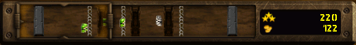
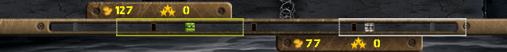
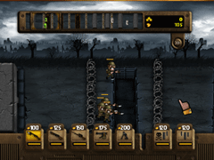
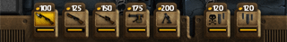
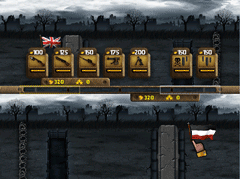
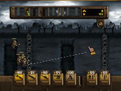
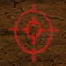
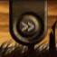

5 |
Cómo jugar |
 |
|
¡Bienvenido a Trenches Generals! ¡Ábrete paso luchando en las trincheras de la Primera Guerra Mundial y vence a tu oponente! Trenches Generals es un juego de estrategia orientado a la acción que te propone el despliegue de unidades de combate en el campo de batalla, adelantar el frente, alcanzar y destruir la base enemiga.
Hay varios modos de desplazar tu vista del campo de batalla.
- Moviendo el cursor del mando de Wii en los bordes de la pantalla hacia la dirección apropiada.
- Pulsando
- Usando las "lentes de visión" en el mini mapa tanto en modo 1 jugador como en modo 2 jugadores (ver abajo).
 el mini mapa en modo un jugador
 el mini mapa en una partida de 2 jugadores
En Trenches el objetivo principal es entrenar unidades y llevarlas hasta el lado contrario del campo de batalla.

Mientras el juego avanza, se gana oro de forma constante. El oro se usa para entrenar unidades y lanzar ataques de artillería y gas.
Para entrenar unidades, pulsa
 La barra de unidades
En partidas de dos jugadores no se ve la barra de unidades de forma permanente. Pulsa para mostrar y ocultar la barra.
 La barra de unidades en modo de 2 jugadores
Comandar unidades en Trenches es muy sencillo. Solo selecciona una unidad situando el cursor del mando de Wii sobre ella y pulsando Con  Traza una línea de movimiento para ordenar moverse a tus unidades
Mover a todas tus unidades en pantalla con Órdenes Globales:
Las Órdenes Globales son un modo sencillo de mover tus unidades en pantalla hasta la próxima trinchera con un gesto. No tienes que seleccionar a las unidades individualmente ni dar órdenes separadas.
Para dar una orden global, pulsa
Ataques de artillería y de gas tóxico disponibles en la barra de unidades.  Pulsa Pulsa Pulsa
Para acelerar el juego en cualquier momento, pulsa Púlsalo de nuevo para volver a la velocidad normal. En modo de un jugador también puedes pulsar para acelerar el juego.
|
 en el mando de Wii.
en el mando de Wii. en el botón de unidad que corresponde a la que deseas entrenar. Esta aparecerá de inmediato en el extremo del campo de batalla, saliendo de la base del jugador.
en el botón de unidad que corresponde a la que deseas entrenar. Esta aparecerá de inmediato en el extremo del campo de batalla, saliendo de la base del jugador. y agita el mando de Wii:
y agita el mando de Wii: |
 |
 |